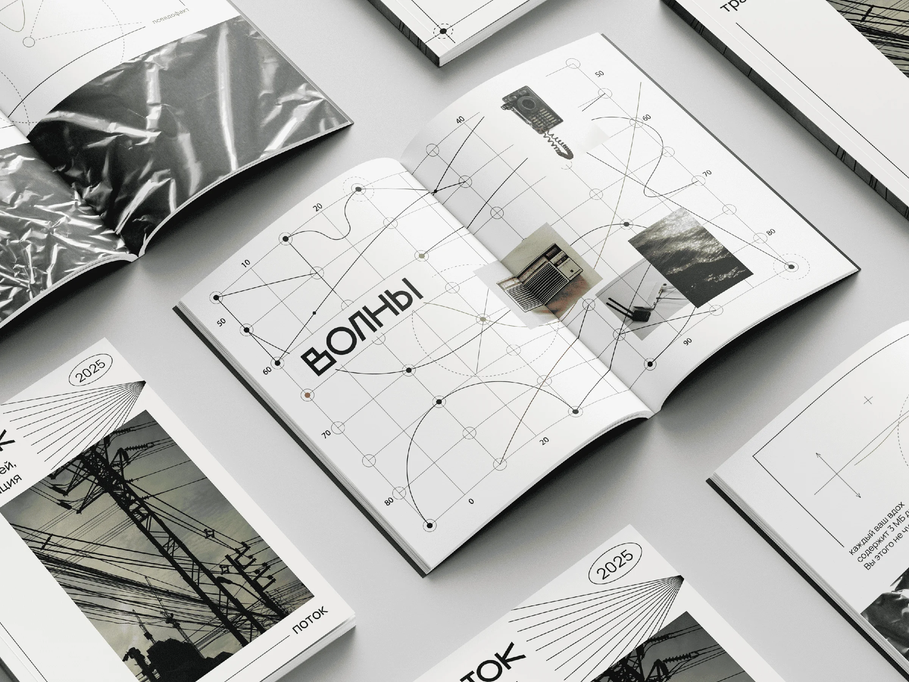
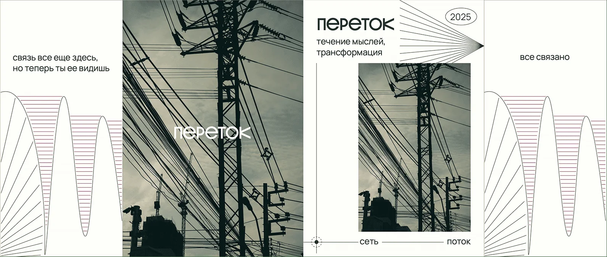
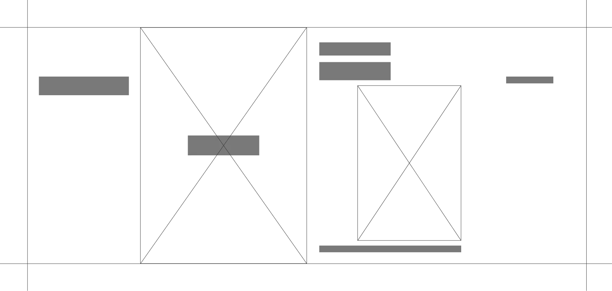
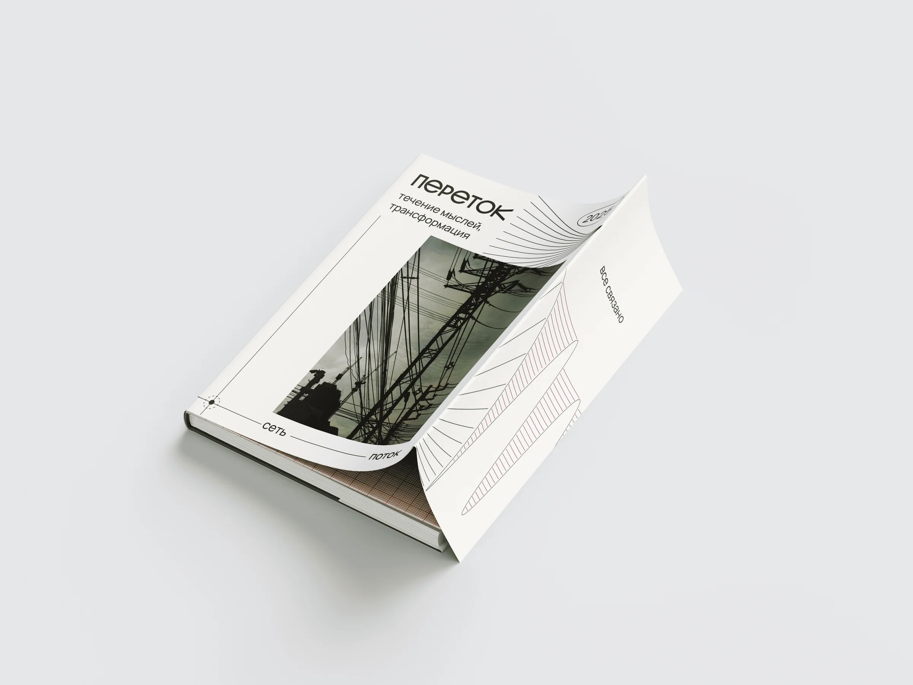
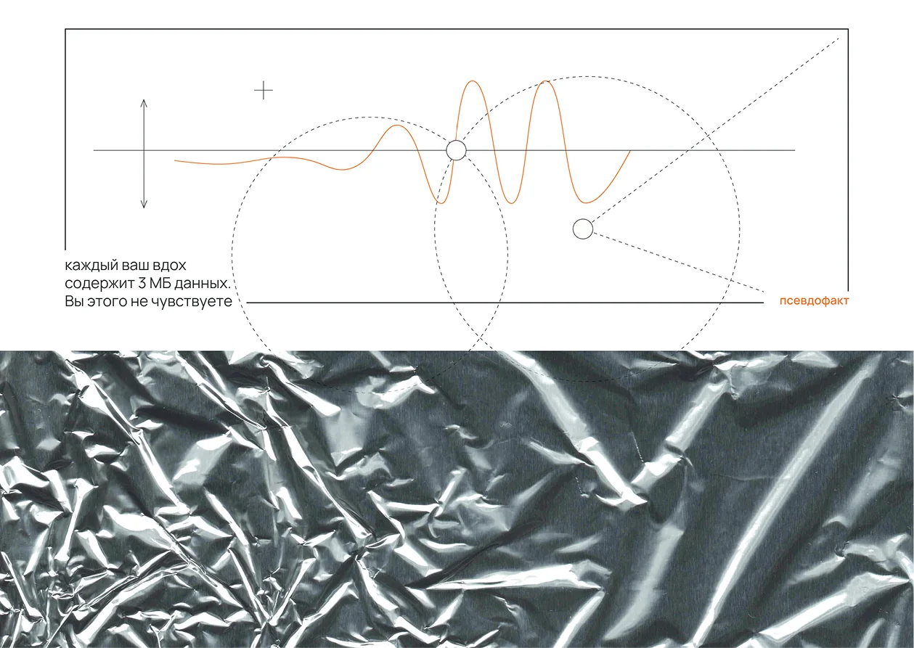

Суперобложка открывает историю фразой «Всё связано» и задаёт путь от непонимания к осознанию сети.

[о проекте]
Сделать невидимую связь заметной
Зин исследует сети, которые окружают нас в повседневности, но обычно остаются незамеченными. Название «Переток» стало метафорой движения тока и информации по цифровым каналам.
В конце появляется мысль: связь всё ещё здесь, но теперь читатель способен её увидеть.
Для графики отсканированы фактуры фольги, меди, телефонных проводов и миллиметровой бумаги.
Аналоговые фактуры соединены с типографикой и последовательной редакционной композицией.




[результат]
Печатный объект как исследование
Тактильные материалы, сканы и типографика превращают тему цифровых сетей в физический опыт, который раскрывается по мере чтения.
следующий проектКалендарь NAUKA 2026
→